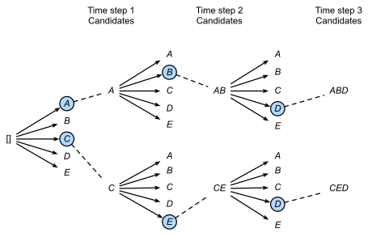

:Searching through large solution spaces
I was working on a topcoder challenge, Collatz Sequence, and it presented an interesting problem. In abstract, suppose that you have some tree, T. The tree has a HUGE number of nodes (googol plus). Nodes in the tree have a "score", with descendent nodes usually (but not always) having better scores than their ancestors. You are tasked with finding a node in this tree with as high a "score" as possible. How do you do that?
At first glance, the problem seems impossible, and in a sense, it is. It is computationally infeasible to find the best node through brute force computation. The best you can do is guess. So let's guess as smartly as we can.
Beam Search Algorithm
The idea is that you'd like to search the entire space, but memory and time limit you from checking all possible values. So instead of checking every subtree, you only check those subtrees which have the highest scores for the level, and are likely to yield a high score for the whole tree. It's a simple idea, but very powerful.
Do a breadth-first search of the tree. At each level, you prune your solution space to only look at the best candidates. Continue until there are no more nodes to look at, return the best found. You aren't guaranteed to get the best solution anymore, but by giving up that guarantee, you get an algorithm that can actually finish, and anyways usually returns a pretty good answer. Here's the pseudo:
WIDTH = beam width
T = Tree with root r
level = [r] #bfs level set
bestFound = -1
#bfs through tree, pruning at each step
while level not empty:
temp = []
for n in level:
bestFound = max(bestFound, n)
for child in n.children:
temp.append(child)
#prune bad subtrees
while len(temp) > WIDTH:
temp.remove(min(temp))
level = temp
return bestFound
Runtime analysis
By my reckoning, the time complexity of the above algorithm is: , where is the depth of the tree and is the max width of the level set.
The algorithm given above isn't particularly good. There's some optimizations that can be made (try letting temp be a max-heap instead). But already you can see that we're on the right track. It's totally feasible to be able to search through gigantic trees this way by adjusting the Width variable. With a little tweaking, you can even get it down to .
Summary and next steps
The gist of the article is that it's impossible to find best answers in large solution spaces, so you must find clever greedy algorithms to find good-enough answers. Next step would be a dfs approach to the beam-search algorithm, prioritizing those nodes which have best value, even if not on the same level. I'll leave that to the reader though.
Dramorak